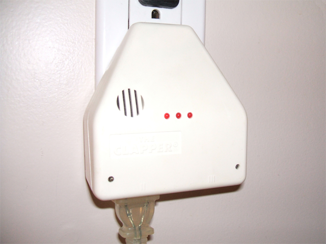

The Gesture That Was the Whole Interface
The Clapper turned the human body into the entire interface — no remote, no switch, no keyboard. Just two sharp claps, recognized as a command.
Most of the machines in this museum ask something of your hands. They want a finger on a key, a palm on a ball, a stylus on a surface. They are built around the assumption that there is a hand nearby and an input device under it. The Clapper, made by Joseph Enterprises of San Francisco in 1984, is the rare one that wants nothing from you but a gesture — and not even a gesture you make with a hand on anything. You just clap. Twice.
Let me say plainly what an astonishing thing that is. The Clapper has no keyboard, no display, no switch of its own, no remote that you carry. Its entire user interface is the acoustic recognition of two sharp claps in quick succession. You plug a lamp into it, you plug it into the wall, and from then on the lamp is controlled by your body alone, through the air. The body is not operating an interface. The body is the interface.
I want to dwell on how weird and how ordinary that is, because both are true. Weird, because this is a full gesture-recognition pipeline — sensing, pattern-matching against a noise background, rejecting false positives, toggling a state — compressed into a $30 box sold off a shelf in the 1980s, a decade before mainstream commercial speech and gesture recognition reached homes. Ordinary, because every visitor who has seen this museum has probably clapped at one. It is one of the few artifacts we keep that most people have used themselves, and that's part of what makes it worth caring about: the most famous interface gesture of its era is a handclap.
The engineering hides in the anti-annoyance. Any fool could build a box that toggles on the first loud sound; the dog barks, the phone rings, the doorbell goes, and the lights flicker. The Clapper's trick is that it is tuned to reject a single clap and to require a minimum gap, so it only fires on the deliberate double-thump. Distinguishing an intentional percussive command from incidental noise is a genuine signal-processing problem, solved in simple analog and digital circuitry and protected by a patent family (US 4,906,995 and successors) that Joseph Enterprises defended fiercely. It is the same problem, in miniature, that wake-word assistants would spend decades failing to solve gracefully. The Clapper just decided the command should be loud enough to be unmistakable, and solved it with a clap.
That choice — make the command percussive and unmistakable rather than subtle and error-prone — is the artifact's quiet intelligence. A clap is deliberate, loud, and hard to confuse with anything except another clap. It was chosen precisely because it is not quiet. Every other command channel in this era whispered or fumbled; the Clapper demanded you commit, and rewarded you with a lamp.
It also gives us a clean place in the museum's family tree. The Clapper is the sound-pattern sibling of the spoken wake-word: where Butler in a Box listened for "Godfrey, turn on the lights," the Clapper listened for the body's own percussive language. It is the cautionary counterpoint to the Konami LaserScope, whose voice-trigger mic fired on any loud noise and ruined the experience — proof that acoustic input lives or dies on its rejection of the wrong sounds. And it is the only museum note where the command is a sound, not a written or pointed thing: the Linus Write-Top recognized handwriting gestures, but those still traveled through a stylus and a surface. The Clapper's gesture has no intermediary at all.
If you want the strangest echo, look at the Cracklebox, also in our collection. That one lets your body complete an electrical circuit and become the instrument. The Clapper is the domestic version of the same philosophy — your body is not a separate operator but part of the loop — just aimed at turning a lamp on and off instead of making a tone.
There is no poetic pretension here. The Clapper is a lamp switch. It exists to save you from walking across a room. But that is precisely its beauty as an HCI artifact: it reduced an interaction to a single gesture, made that gesture the whole interface, and sold millions by betting that people would want it. "Clap on, clap off" became shorthand for ridiculously simple interfaces — a phrase you can say and anyone will know the machine. Not many devices in this museum have their gesture be famous. This one does. The body spoke, the machine listened, and the lamp, for the first time in history, obeyed a handclap.
The Clapper (1984). Public-domain image, Wikimedia Commons.
